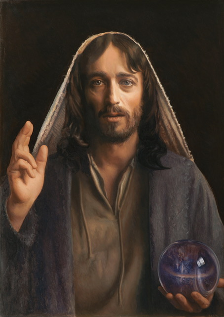
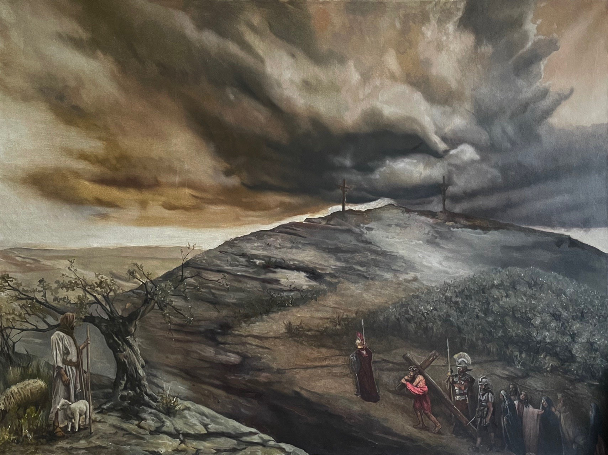

In the hills of Assisi, study the traditions of the Old Masters alongside renowned painter Mark Balma. A season devoted to beauty, craftsmanship, contemplation, and community.
Assisi, seen from the school




The path of the bottega, the master’s workshop: from the first line of a drawing to buon fresco, in the methods of the Old Masters.
disegno
Pencil, charcoal, silverpoint, red and black chalk, and ink: the discipline of the hand and the eye.
tempera
Egg tempera, as practiced in 15th-century Europe.
olio
Oil in the 15th-century manner of the Flemish masters and Leonardo da Vinci.
affresco · true fresco
Accomplished students work directly with Mark Balma on fresco murals.

creare
Drawing, egg tempera, oil and buon fresco in the bottega, working alongside the maestro.
riposo
A stone Italian villa in the fields and foothills below Assisi, with quiet and time to see.
preghiera

La Cappella: the old stable, becoming a chapel.
comunità
The allievi (students) share one table in the vaulted refectory.
[CONFIRM daily schedule: studio hours, Mass/prayer times]
An Italian villa in the fields and foothills below Assisi, the land St. Francis walked: a working atelier, a shared table, a chapel, and quiet. Beyond its gates, Assisi itself, where the allievi (students) come as pilgrims, not tourists.


Beauty · Goodness · Truth
Beauty
“…the spirit in art that brings us all closer to God.”— Mark Balma
Goodness
“Our individual calling and journey all work to the greater good of God.”— Mark Balma
Truth
“…a moment of spiritual truth can be discovered and shared.”— Mark Balma
A season to study deeply, create faithfully, and rediscover the beauty of a life devoted to art.
Join the 2027 Interest List